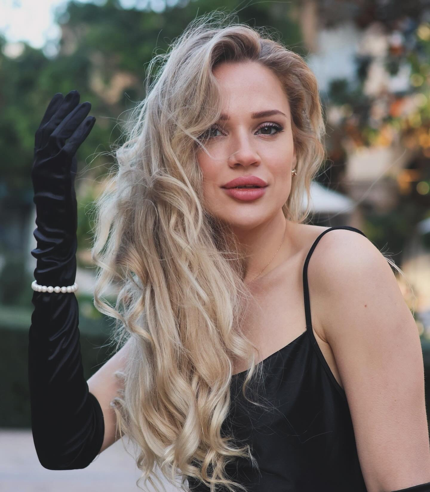

Emotion & Expression
Emotion.Mood.
This page groups the images where expression and atmosphere carry the frame. It is intended for portrait, editorial, and concept work that depends on mood as much as styling.



Contact Julia
Use this page when the client wants feeling, not just polish.
Email: vaganovajulia88@gmail.com • Instagram: @julia_mod8